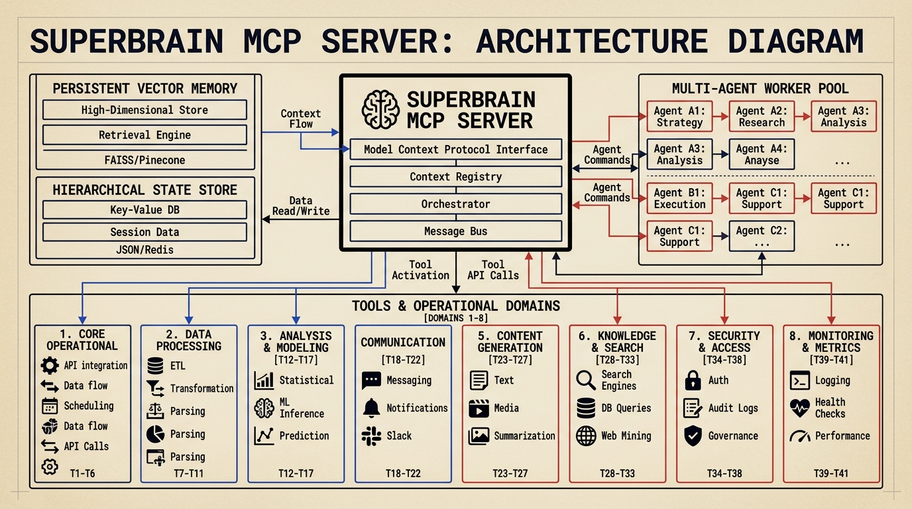
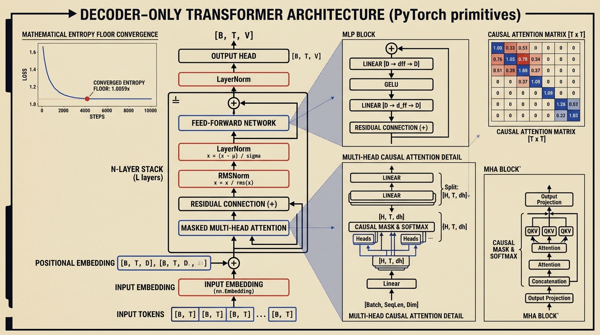

I build interpretable meta-inference pipelines, Graph-RAG knowledge engines, and autonomous multi-agent harnesses. Merging rigorous deep learning with robust systems engineering.
Autonomous database optimization agent that monitors live PostgreSQL queries, diagnoses execution plans, synthesizes indexes, benchmarks regressions, and safely rolls back failed migrations.
PostgreSQLEXPLAIN ANALYZEPythonAsyncPGDocker
04 // MCP MEMORY

SuperBrain MCP Multi-Agent Memory
Unified Model Context Protocol (MCP) server providing persistent cross-session vector memory, hierarchical state orchestration, and execution infrastructure with 41 tools across 8 operational domains.
Multi-step claim verification agent decomposing complex discourse into atomic propositions, running iterative stance-detection retrieval loops, and assigning cite-backed truth verdicts.
NLIspaCyPyTorchTransformersRetrieval
06 // DEEP LEARNING

Transformer Architecture from Scratch
Decoder-only transformer implemented directly from PyTorch primitives, with mathematical causal masking, layer normalization, and verified convergence to 1.0059x the entropy floor.
PyTorchTensorsTransformersCUDAAblation
03 // RECOGNITION
HONORS & ACHIEVEMENTS
Competitive hackathon rankings, critical algorithmic audits, and academic distinctions.
🏆 TOP 5 SOUTH ZONE
IBM BOB National Hackathon 2026
Project: The Sentinel Grid · Disaster Intelligence Platform
Engineered end-to-end disaster forecasting architecture comprising 6,957 lines of Python, 314 automated tests, and 104 formula audits. Achieved ROC-AUC of 0.9924 across 473k district-month soil moisture observations.
Identified and resolved a critical coefficient sign inversion in the cardiovascular (ASCVD) risk calculation engine that was artificially suppressing baseline risk to 0.1%. Verified and reproduced fix against published Goff 2014 trials.
🎓 3.47 / 4.0 CGPA
Saint Martin's University Exchange Honors
Lacey, WA, USA · Completed May 2026
Completed rigorous upper-division coursework in Distributed Systems, Machine Learning, and Computer Vision with a 3.47 CGPA while serving as a peer mentor in the Center for Student Success.
⚡ EXECUTIVE LEADERSHIP
CODE{X} Programming Club
Woxsen University Campus Initiative · 200+ Members
Spearheaded university-wide algorithmic hackathons, led weekly technical deep-dives on systems engineering and AI architectures, and conducted peer mentorship for 200+ student developers.
04 // TECHNOLOGIES
CORE TECHNOLOGIES
Engineering proficiencies across language models, systems programming, and data engineering.
VERIFIED TECHNOLOGIES
TECHNOLOGIES UTILIZED ACROSS 39 REPOSITORIES
Every technology listed here is backed by reproducible code in my public repositories and clinical audit work.
Python
Core Lang · 34 Repositories
Primary language for ML, asynchronous agent harnesses, PyTorch neural networks, and automated test suites.
SQL (PostgreSQL & SQLite)
Relational DBs & Query Tuning
Schema architecture, EXPLAIN ANALYZE cost tuning, and autonomous index generation with AsyncPG.
PyTorch
Deep Learning & Tensors
Built transformer decoders, causal self-attention, and training loops directly from PyTorch tensor primitives.
Hugging Face & spaCy
Transformers & Linguistics
Cross-Encoder NLI stance classification, tokenization pipelines, and linguistic feature extraction.
Auditing backend healthcare ML architecture, resolving algorithmic issues in cardiovascular risk calculation, and authoring RAG and LLM safety requirements on clinical-signoff protocols mapped to ICMR 2023 guidelines.
AUG 2025 — MAY 2026LACEY, WA, USA
International Exchange Student (BS Computer Science - AI/ML)
Saint Martin's University · Center for Student Success (CGPA: 3.47 / 4.0)
Completed rigorous coursework in Machine Learning, Distributed Systems, and Advanced Algorithms. Maintained a 3.47 CGPA across two semesters while serving in academic student success programs and peer mentorship (Exchange completed May 2026).
2023 — 2027 (EXP. 08/2027)HYDERABAD, INDIA
B.Tech in Computer Science & Engineering (AI & ML)
Woxsen University · Primary Degree (CGPA: 8.69 / 10)
Primary degree-granting program specializing in Artificial Intelligence, Deep Learning, Computational Semantics, and Algorithmic Design. Lead researcher in logical fallacy and multi-agent systems.
MAR 2024 — AUG 2025CAMPUS INITIATIVE
Executive Leader
CODE{X} — The Programming Club
Organized algorithmic hackathons, conducted peer code reviews, coordinated competitive programming workshops, and mentored junior developers in Python and modern full-stack workflows.
FEB 2024 — APR 2024ACADEMIC RESEARCH
Research Intern
AI Research Centre · Woxsen University
Built Django-based web modules and UI interfaces applying applied ML methods to academic research tools.
terminal.sh // Systems Interactive Console
_□×
System Kernel v4.2.1 [Advaith Narayana Sarva - Interactive Environment]
Type help to view available commands or try whoami, projects, skills, pokedex.
advaith@systems:~$
LET'S CONNECT
BUILD SOMETHING REMARKABLE TOGETHER.
Whether you are exploring research partnerships, engineering internships, or full-time GenAI and systems engineering roles, my inbox is always open.